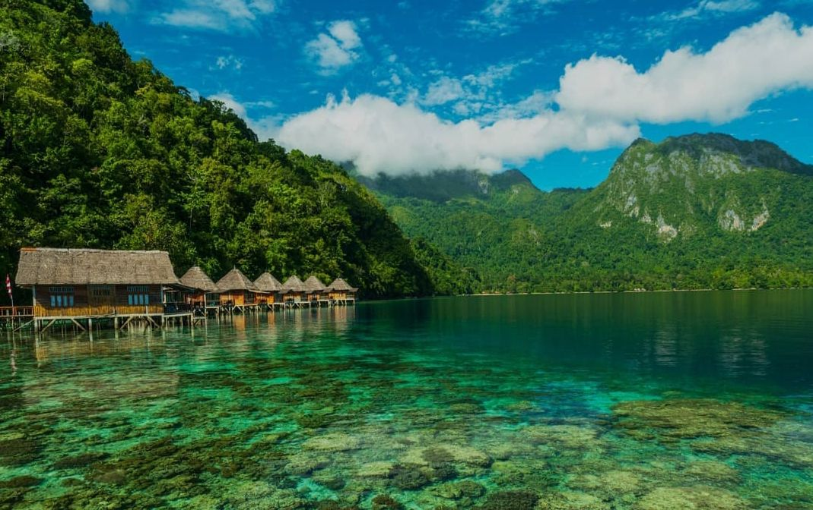
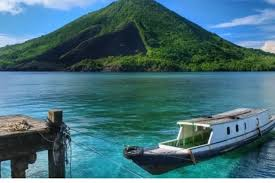
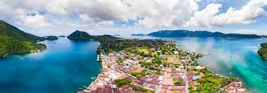
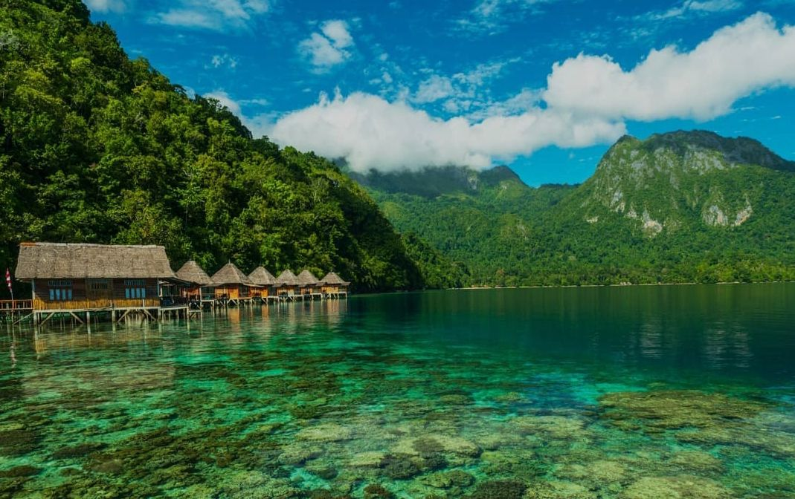
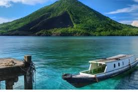
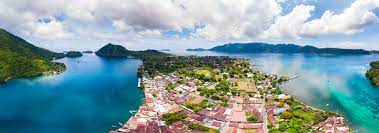
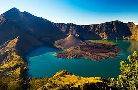
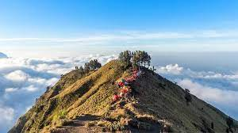
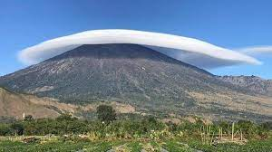
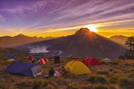

Banda Naira adalah salah satu pulau di Kepulauan Banda, dan merupakan pusat administratif Kecamatan Banda, Kabupaten Maluku Tengah, Maluku, Indonesia. Secara administratif, Banda Neira terbagi dalam 12 desa. Banda Neira pernah menjadi pusat perdagangan pala dan fuli (bunga pala) dunia, karena Kep. Banda adalah satu-satunya sumber rempah-rempah yang bernilai tinggi itu hingga pertengahan abad ke-19. Kota modernnya didirikan oleh anggota VOC
 





Banda Neira menjadi perbincangan warganet lantaran keindahan alamnya yang memukau. Panorama alam laut biru berpadu dengan gugusan pulau dan gunung yang indah seakan menarik siapapun untuk berkunjung. Selain pemandangan gunung, pantai dan pulau, panorama bawah lautnya juga tak kalah menarik. Bahkan wisata bawah laut Banda Neira disebut-sebut merupakan salah satu spot snorkeling dan diving terbaik di dunia. Terdapat lebih dari 30 spot snorkeling yang menarik di kawasan ini.
Gunung Api Banda bisa dikatakan sebagai salah satu ikon wisata utama dari Banda Neira. Pengunjung bisa mendaki ke puncak gunung ini untuk melihat pemandangan alam yang yang menakjubkan dari puncak ketinggian. Salah satu dari gugusan Kepulauan Banda yang menarik untuk dikunjungi saat berwisata ke Banda Neira adalah pulau Nailaka. Pulau tak berpenghuni ini memiliki kecantikan yang sungguh menakjubkan. Tak berlebihan rasanya jika pulau kecil ini disebut sebagai sekeping surga yang jatuh ke Bumi. Hamparan pantai pasir putih yang berpadu dengan jernihnya air laut akan memanjakan mata setiap pengunjung.
Di sebelah barat kerucut Rinjani terdapat kaldera dengan luas sekitar 3.500 m × 4.800 m, memanjang kearah timur dan barat. Di kaldera ini terdapat Segara Anak (segara= laut, danau) seluas 11.000.000 m persegi dengan kedalaman 230 m. Air yang mengalir dari danau ini membentuk air terjun yang sangat indah, mengalir melewati jurang yang curam. Di Segara Anak banyak terdapat ikan mas dan mujair sehingga sering digunakan untuk memancing. Bagian selatan danau ini disebut dengan Segara Endut.
   
Pesona yang dimiliki oleh Gunung Rinjani nyaris sempurna sehingga tidak diragukan lagi jika Rinjani menjadi daya tarik yang mampu memikat minat para wisatawan mancanegara maupun nusantara untuk mendakinya. Dan mendaki Gunung Rinjani tentunya akan menjadi kenangan dan pengalaman hidup yang tidak akan terlupakan.Gunung Rinjani memiliki kawah dengan lebar sekitar 10 km dan terdapat danau kawah yang disebut danau Segara Anak dengan kedalaman sekitar 230 m. Dengan warna airnya yang membiru bagaikan anak lautan, air yang mengalir dari danau ini membentuk air terjun yang sangat indah dan mengalir melewati jurang yang curam.
Hutan dan semak belukar seluas 76.000 hektar merupakan pemandangan yang asri bagi Gunung Rinjani